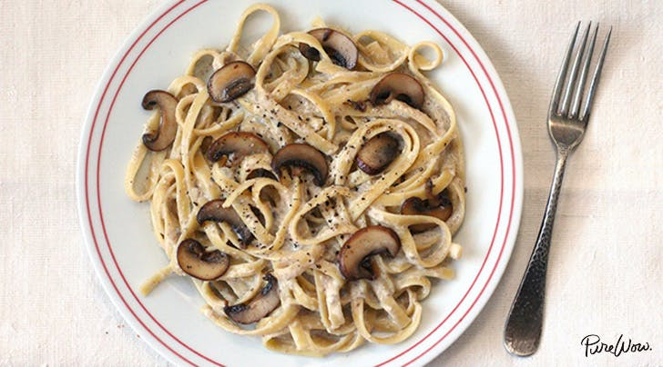

Mushroom Alfredo Recipe

A simple take on this creamy classic! Serve with fettuccini, gnocci, or your favorite type of pasta.
Ingredients
- 2 Tbsp Butter
- 4 Oz Cremini Mushrooms
- 1 Clove Garlic, Minced
- 1 Cup Heavy Cream
- 1/4 Cup Parmesan Cheese
- Salt and Pepper
Steps
- Heat the butter over medium heat.
- When the butter is fully melted and sizzling, add the mushrooms. Cook the mushrooms for 3-4 minutes, stirring occasionally.
- When the mushrroms have started to brown, add the garlic.
- Continue to satuee the mixture for 1 minute, stirring frequently, then add the cream.
- After a few moments the cream with start to simmer from the heat. Slowly add the parmesan cheese, alternating between sprinkling it on and stirring to help it melt.
- Continue to simmer the sauce, stirring occasionally, about 4-5 minutes, or until it thickens to desired consistency.
- Add salt and pepper to taste.